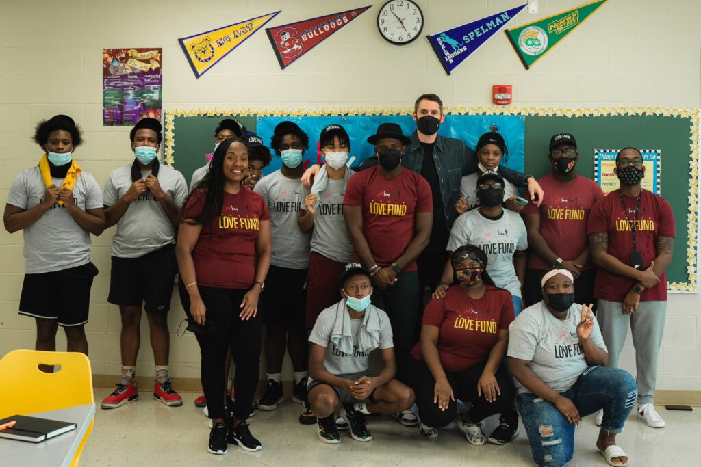

Mental health education
Curriculum helps students build emotional awareness, resilience, empathy, and self-compassion.
Kevin Love Fund × Broad Shoulders Initiative
Education and storytelling help young people talk about mental health, find support, and feel less alone.
Youth Council Impact
BSI founder Jonathan Wang is a Kevin Love Fund Youth Council member. Through the council, he helped support KLF youth mental health programming reaching:
A Kevin Love Fund social media campaign
Everyone carries something you can't see.
Jonathan partnered with the Kevin Love Fund to help start this campaign, inviting people to share unseen hardships and how they have navigated them. Each story can make mental health conversations feel more normal and remind someone they are not alone.
Your story, your way
Share publiclyUse a photo, an image, a handwritten message, or your own words.
About the Kevin Love Fund
Founded by NBA player Kevin Love, the fund works toward equity between mental and physical health through education, storytelling, advocacy, and resources.

Education, stories, support
Curriculum helps students build emotional awareness, resilience, empathy, and self-compassion.
Personal stories challenge stigma and make it easier to speak openly.
Practical tools support students, educators, athletes, and families.
Looking ahead
BSI hopes to explore bringing Kevin Love Fund educational curriculum to local elementary and middle schools in Poway Unified School District.
This is a future goal, not an existing school partnership.
Kevin Love Fund Resources